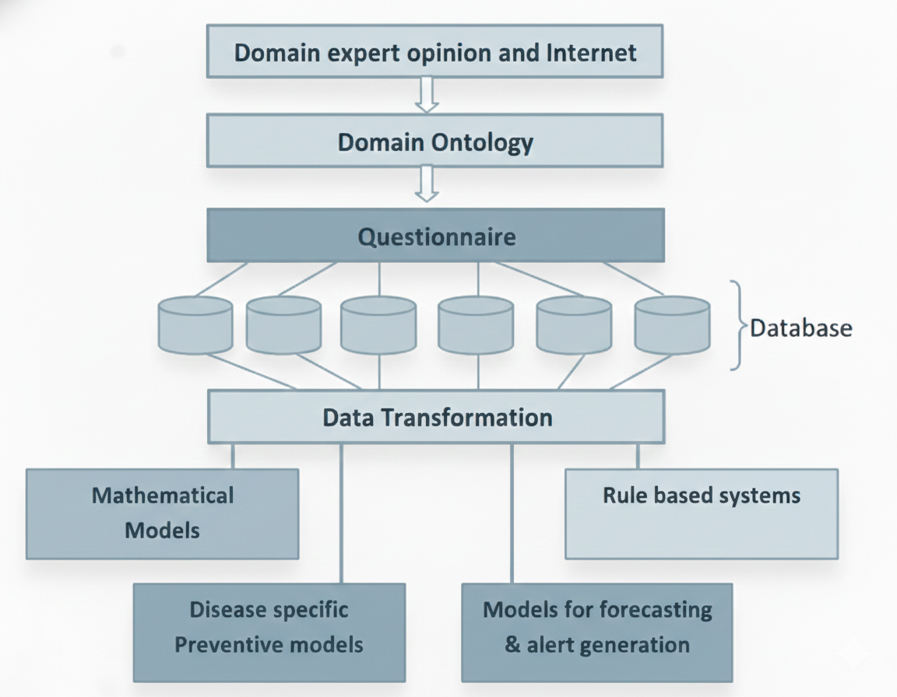
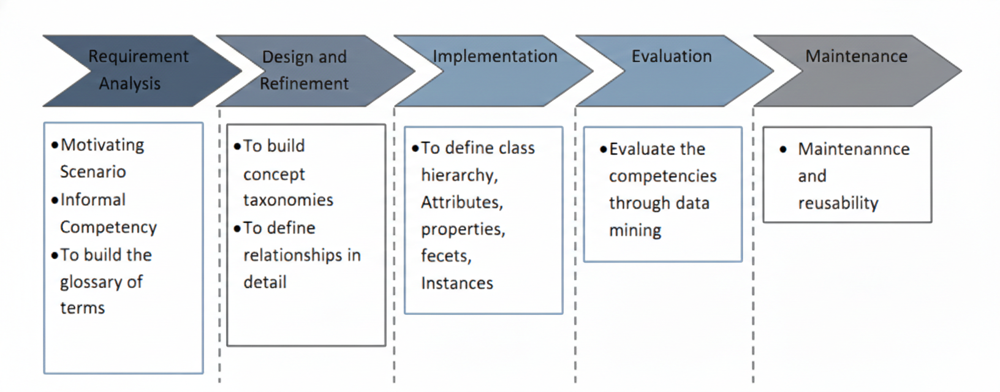

The research adopts a multi-phase methodology to model, integrate, and analyze environmental and occupational epidemiology data using ontology-based data mining. The methodology ensures semantic interoperability, structured knowledge representation, and advanced predictive analytics.

Data will be collected from government health reports, environmental monitoring agencies, occupational safety records, and epidemiological studies. The data will undergo cleaning, normalization, and standardization to ensure consistency and reliability.
A domain-specific ontology will be developed to formally represent exposure agents, environmental factors, occupational activities, diseases, and demographic attributes. The ontology will be constructed using Semantic Web technologies such as OWL and RDF.

Preprocessed datasets will be semantically annotated and mapped into a unified knowledge base. This integration enables interoperability across heterogeneous data sources and supports advanced querying and reasoning mechanisms.
Mathematical models will be developed to analyze exposure-disease relationships across spatio-temporal dimensions. These models will help understand epidemiological risk patterns and predict disease progression under different environmental conditions.
Data mining techniques such as clustering, classification, and association rule mining will be applied to discover hidden relationships between environmental exposure and health outcomes.
Interactive dashboards and analytical visualization tools will be developed to assist policymakers, healthcare professionals, and regulatory agencies in making evidence-based decisions.